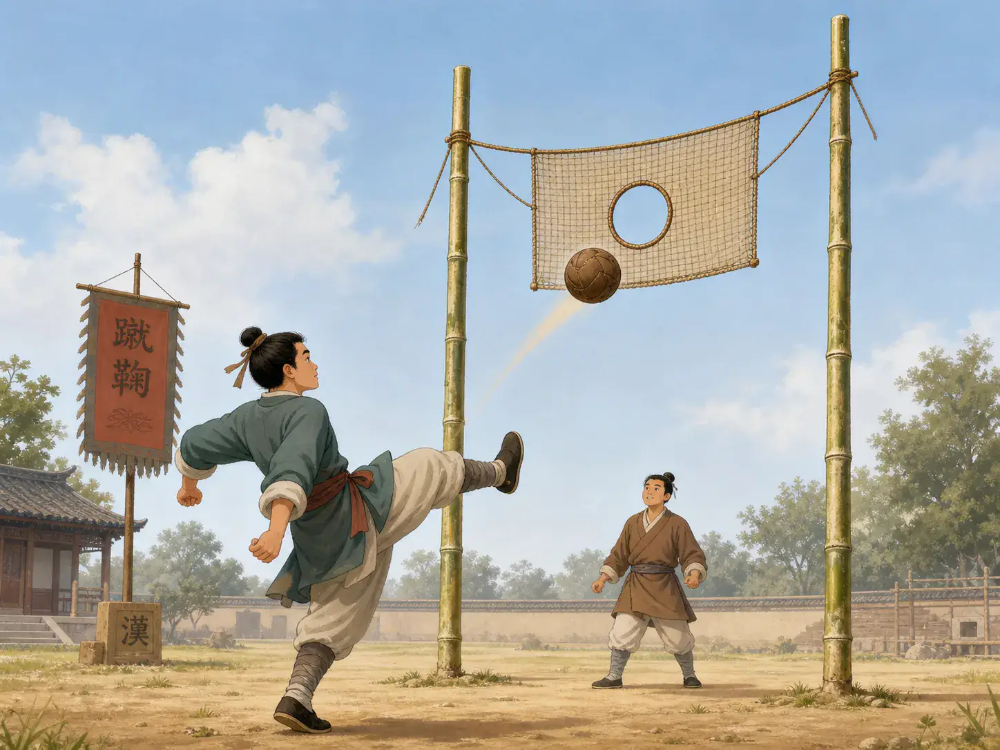
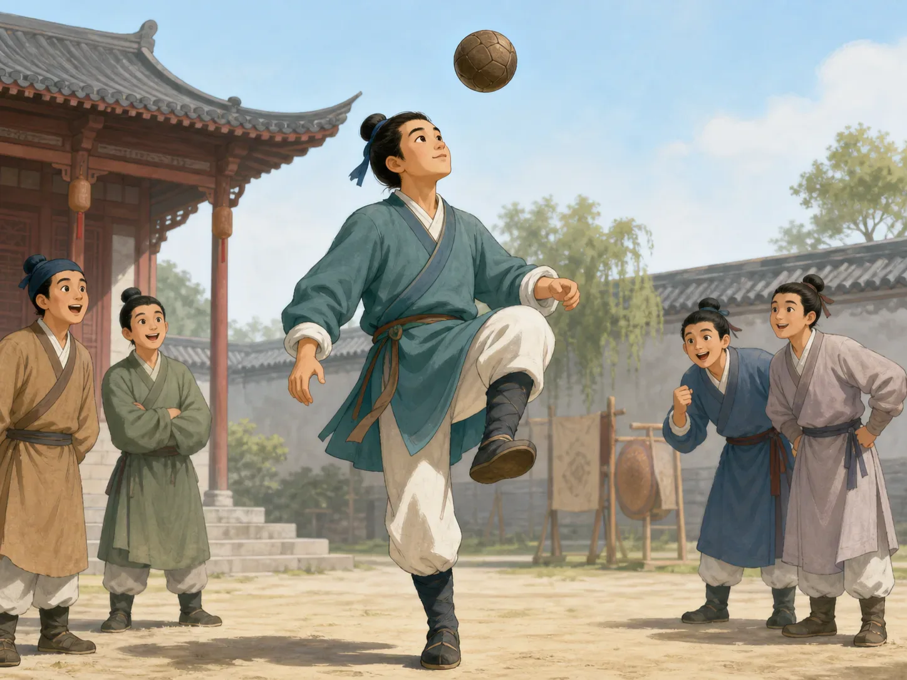

蹴鞠：两千年前的踢球游戏
Cuju: A Ball Game from Two Thousand Years Ago
Page 1
如果球门挂在半空中呢？
What If the Goal Were High in the Air?

Two tall poles hold the goal high in the air, and the ball must pass through the small opening in the net.
想象一下，你正在踢足球，可眼前的球门有点奇怪。它不在地上。两根高高的竹竿中间挂着一张网，网上只有一个小洞。想得分，就得把球准确地踢进那个洞里。这可不容易。
两千多年前，中国人已经在玩用脚踢球的游戏了。其中有一种叫“cùjū · 中国古代用脚踢球的一类游戏。”。这个名字其实很好懂。“蹴”就是用脚踢，“鞠”就是球，合起来差不多就是——“踢球”。
不过，蹴鞠并不是今天的足球。它流传了很长时间，玩法也一直在变化。有的玩法分队比赛，有的要射门。其中一种很特别的球门，就真的高高挂在两根竿子之间，球要从中间的小洞穿过去。今天的守门员看见，大概会先抬头想一想：“等等，我要站哪儿？”
Imagine playing soccer with a very strange goal. Instead of a wide net standing on the ground, two tall poles rise into the air. Between them hangs a net with a small opening in the middle. To score, you have to kick the ball through that hole. That would not be easy.
More than two thousand years ago, people in China were already playing games with a ball and their feet. One of these games was called cùjū · 蹴鞠 · An ancient Chinese family of ball games played mainly with the feet.. The name is wonderfully straightforward: cù means to kick, and jū means a ball. So cuju basically means “kick the ball.”
It was not the same game as modern soccer. In fact, cuju changed many times over its long history. Some versions had teams and goals. In one famous version, the goal really did hang high between two poles, with a hole that players tried to kick the ball through. A modern goalkeeper would probably look up and say, “You want me to stand where?”
Page 2
有时候，厉害的是不让球落地
Sometimes the Trick Was Keeping the Ball Up

Skilled cuju players control the ball with their feet, knees, and shoulders, trying to keep it off the ground.
蹴鞠也不一定非要进球。大约一千年前，很多人特别喜欢练控球的本事。他们会用脚、膝盖、肩膀等部位把球接住，再送出去，尽量不让它掉到地上。听起来是不是有点熟悉？
今天踢足球的人也会颠球：左脚一下，右脚一下，再用膝盖接住。古代会蹴鞠的人，也会练各种让球一直待在空中的技巧。
有人练得特别厉害，别人就会围在旁边看。那时候甚至还有大家一起练习蹴鞠的组织。
球本身也在变化。比较早的球用皮革缝起来，里面塞着羽毛等材料。后来，人们把充气的动物膀胱包进皮球里，球变得更圆，也更容易弹起来。球变好踢了，能玩的花样当然也更多了。
Scoring goals was not the only way to enjoy cuju. About a thousand years ago, skillful ball play became especially popular. Players tried to keep the ball from touching the ground, controlling it with their feet, knees, shoulders, and other parts of the body. That may sound surprisingly familiar.
Today, a soccer player might juggle a ball again and again with the top of one foot, then a knee, then the other foot. Long ago, cuju players also practiced impressive ways of keeping a ball in the air.
Some people became so good that watching them was part of the fun. Crowds could gather around to see a player show what they could do. There were even organized groups where people practiced cuju together.
The ball itself changed too. Early balls were made from leather and stuffed with material such as feathers. Later, people learned to make a leather ball around an inflated animal bladder. The new ball was rounder and bounced better—which gave skilled players even more tricks to try.
Page 3
游戏不同，快乐却很熟悉
Different Game, Familiar Feeling
后来，蹴鞠慢慢从日常生活里消失了。今天的足球是在很久以后发展起来的，并不是蹴鞠直接变成的。
可是看看古画里踢蹴鞠的人，还是会觉得有一点熟悉。球飞在空中，一个人紧紧盯着它，等着在最合适的时候抬脚。旁边的人也在看，想知道这一脚到底踢得怎么样。
玩法不一样，球门甚至还可能挂在半空中。可是那种心情，两千多年以后的小朋友还是马上就能懂。
看见一个球。就忍不住想踢一脚。
Over the centuries, cuju slowly faded from everyday life. The modern game of soccer developed much later and did not simply grow out of cuju.
Still, look at an old picture of someone playing cuju and something feels familiar. There is a ball in the air. Someone is watching it carefully, ready to move a foot at exactly the right moment. Other people stand nearby, waiting to see what happens next.
The rules are different. The goal may even be hanging far above the ground. But the feeling is easy to recognize.
Someone sees a ball. And, just as children still do today, they want to kick it.